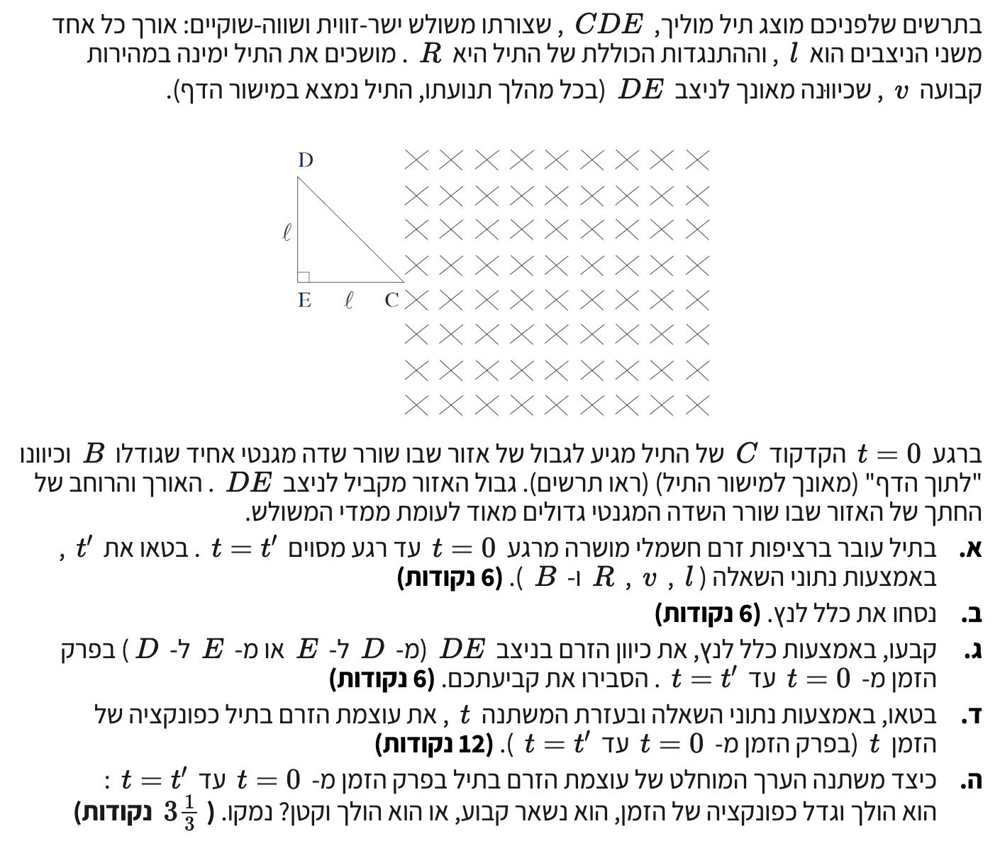

שלום תלמידים! בתרגיל זה נתמודד עם תופעת ההשראה האלקטרומגנטית. מוליך בצורת משולש נכנס לאזור שבו קיים שדה מגנטי. כתוצאה מכך, השטף המגנטי דרך המשולש משתנה, ונוצר בו זרם מושרה. נשתמש בקינמטיקה בסיסית, בחוק פאראדיי כדי לחשב את גודל הכא"מ, ובחוק לנץ כדי לקבוע את כיוון הזרם. בואו ניגש לעבודה שלב אחר שלב!

[תמונת השאלה המקורית]לא נמצאה תמונה בשם question-image.png באותה תיקייה.
סעיף א'
מה נתון:
אורך הניצבים של המשולש ישר-הזווית \( CDE \) הוא \( l \). כלומר \( CE = l \) וגם \( DE = l \).
המשולש נע ימינה במהירות שגודלה קבוע \( v \).
ברגע \( t = 0 \) הקודקוד \( C \) מגיע לגבול השדה המגנטי.
הגבול מקביל לניצב \( DE \), לכן הנקודה \( E \) תיכנס אחרונה לשדה ביחד עם כל הניצב \( DE \).
מה מחפשים:
את הרגע \( t = t' \) שבו מפסיק לזרום הזרם המושרה במשולש, מבוטא באמצעות פרמטרי הבעיה \( l, v \).
נוסחאות ועקרונות בשימוש: \( \Phi_B = BA\cos\alpha \)\( \varepsilon = -N\frac{d\Phi_B}{dt} \)\( \Delta x = v \cdot t \)
פתרון צעד-אחר-צעד:
שלב 1: ההצדקה הפיזיקלית - מדוע הזרם מתאפס?
על פי חוק פאראדיי, כא"מ מושרה (ולכן גם זרם מושרה) נוצר במעגל סגור אך ורק כאשר יש שינוי בשטף המגנטי (\( \Delta\Phi_B \)) העובר דרכו לאורך זמן.
במהלך כניסתו של המשולש לשדה המגנטי, שטח הלולאה שנמצא בתוך השדה הולך וגדל. השינוי בשטח גורם לשינוי רציף בשטף המגנטי, ולכן זורם בלולאה זרם מושרה.
ברגע שבו המשולש נכנס במלואו לתוך השדה המגנטי (ברגע \( t' \)), כל שטח המשולש מוצף בשדה המגנטי האחיד. מאותו רגע ואילך, למרות שהמשולש ממשיך בתנועתו ימינה, השטח של המשולש שנמצא בתוך השדה נשאר קבוע לחלוטין (ושווה לשטח המשולש כולו).
מכיוון שהשדה המגנטי אחיד (\( B = \text{const} \)) והשטח שבתוך השדה קבוע (\( A = \text{const} \)), השטף המגנטי דרך המשולש הופך לקבוע לחלוטין (\( \Phi_B = \text{const} \)).
קצב השינוי של השטף המגנטי בזמן הופך לאפס (\( \frac{d\Phi_B}{dt} = 0 \)), ולכן הכא"מ המושרה מתאפס (\( \varepsilon = 0 \)) והזרם המושרה מפסיק לזרום.
מכאן אנו מסיקים כי הרגע \( t' \) שבו מפסיק לזרום זרם הוא בדיוק הרגע שבו המשולש סיים להיכנס במלואו לשדה המגנטי!
שלב 2: חישוב רגע הכניסה המלאה של המשולש לשדה
כדי שהמשולש ייכנס במלואו לשדה המגנטי, עליו לעבור מרחק אופקי השווה בדיוק לאורכו על ציר התנועה.
הנקודה הראשונה שנכנסת היא הקודקוד \( C \), והנקודה האחרונה שנכנסת היא \( E \) (הנמצאת על הניצב האחורי \( DE \)).
המרחק האופקי בין \( C \) ל- \( E \) הוא בדיוק אורך הניצב האופקי \( CE = l \).
המשולש נע במהירות קבועה \( v \), ולכן על פי הגדרת המהירות הקבועה מתקיים:
\[ l = v \cdot t' \]
\[ t' = \frac{l}{v} \]
מסקנה: הזרם המושרה במשולש מפסיק לזרום ברגע \( t' = \frac{l}{v} \) (שכן ברגע זה המשולש כולו נמצא בשדה והשטף המגנטי דרכו הופך לקבוע).
טיפ מורה:
שימו לב למלכודת נפוצה בבגרות! תלמידים רבים ממהרים לחשב את זמן הכניסה מבלי להסביר את ההצדקה הפיזיקלית. חובה להראות את הקשר הלוגי: כניסה מלאה \( \leftarrow \) שטף קבוע \( \leftarrow \) שינוי שטף אפס \( \leftarrow \) כא"מ אפס \( \leftarrow \) זרם אפס. זהו בדיוק ההבדל בין פתרון טכני לפתרון פיזיקלי מושלם של 5 יחידות!
חוק לנץ דן בקשר שבין שינוי שטף מגנטי לבין כיוון הזרם החשמלי שנוצר כתוצאה מכך:
מסקנה: כיוונו של הזרם החשמלי המושרה במעגל סגור יהיה תמיד כזה, שהשדה המגנטי שיוצר הזרם המושרה יתנגד לשינוי בשטף המגנטי החיצוני שגרם להיווצרותו.
טיפ מורה:
מילת המפתח כאן היא "לשינוי". חוק לנץ לא מנסה לבטל את השדה החיצוני, אלא לשמור על "סטטוס קוו" (מצב קיים) של השטף. אם השטף גדל, המערכת תנסה להקטין אותו (שדה מושרה הפוך לכיוון השדה החיצוני). אם השטף קטן, המערכת תנסה להגדיל אותו (שדה מושרה באותו כיוון של השדה החיצוני).
סעיף ג'
מה נתון:
המשולש נכנס לתוך השדה המגנטי בזמן \( 0 < t < t' \).
כיוון השדה המגנטי החיצוני \( B \) הוא "לתוך הדף" (\( \otimes \)).
שטח המשולש שנמצא בתוך השדה הולך וגדל ככל שהזמן עובר.
מה מחפשים:
לקבוע האם הזרם זורם מ- \( D \) ל- \( E \) או מ- \( E \) ל- \( D \) לאורך הניצב, ולהסביר זאת באמצעות חוק לנץ.
נוסחאות מהדף: \( \Phi_B = BA\cos\alpha \)
הסבר והוכחה:
נבנה את ההסבר הלוגי שלב אחר שלב:
במהלך כניסת המשולש, השטח הפעיל \( A \) (הנמצא בתוך השדה) גדל.
מכיוון ש- \( B \) קבוע ומופנה לתוך הדף, גם השטף המגנטי (\( \Phi_B \)) לתוך הדף הולך וגדל.
על פי חוק לנץ, המערכת תשאף להתנגד לגידול בשטף. לכן ייווצר שדה מגנטי מושרה (\( B' \)) בכיוון מנוגד לשדה החיצוני – כלומר החוצה מהדף (\( \odot \)).
על פי כלל יד ימין, כדי ליצור שדה מגנטי שפונה החוצה מהדף בתוך המשולש, הזרם המושרה צריך לזרום בכיוון נגד כיוון השעון.
כאשר זרם זורם נגד כיוון השעון לאורך הלולאה המשולשת \( C \rightarrow D \rightarrow E \rightarrow C \), הוא זורם על גבי הניצב מנקודה \( D \) אל הנקודה \( E \).
מסקנה: כיוון הזרם בניצב הוא מנקודה \( D \) לנקודה \( E \).
טיפ מורה:
איך לזכור את כלל יד ימין למעגל סגור בצורה קלה? האגודל מצביע על כיוון השדה המגנטי שאנחנו רוצים לייצר (במקרה זה, החוצה מהדף אלינו, כדי להתנגד לכניסה אל הדף). סגירת ארבע האצבעות תראה לנו את כיוון הזרם בלולאה – במקרה זה, נגד כיוון השעון!
סעיף ד'
מה נתון:
פרק הזמן: \( 0 \le t \le t' \).
התנגדות המשולש היא \( R \).
המשולש הוא ישר זווית ושווה שוקיים (הזוויות החדות הן 45 מעלות). לכן עבור כל מרחק אופקי \( x \) מקודקוד \( C \), האורך האנכי של צלע המשולש באותו מקום הוא בדיוק \( x \).
מה מחפשים:
ביטוי אלגברי המקשר בין עוצמת הזרם \( I \) לזמן \( t \).
המרחק האופקי שהמשולש עבר אל תוך השדה בזמן \( t \) הוא \( x(t) = v \cdot t \).
מכיוון שהמשולש ישר זווית ושווה שוקיים (שיפוע היתר הוא 1), הגובה של החלק שנמצא בתוך השדה (החתך האנכי בתוך השדה) שווה לבסיס שנכנס לשדה: \( y(t) = x(t) = v \cdot t \).
שטח המשולש הנמצא בתוך השדה ברגע \( t \) (שצורתו משולש ישר זווית בעצמו) יהיה מחצית הבסיס כפול הגובה:
מסקנה: הביטוי לעוצמת הזרם כפונקציה של הזמן הוא \( I(t) = \frac{B v^2}{R} \cdot t \).
טיפ מורה:דרך חלופית ויפה לפתרון - כא"מ תנועתי! בדף הנוסחאות מופיעה הנוסחה \( \varepsilon = B_{\perp}l_{\perp}v \). כאן, "המוט" שחותך את קווי השדה המגנטי הוא החתך האנכי של המשולש שעובר על גבול השדה. אורך החתך הזה בזמן \( t \) הוא כאמור \( l_{\perp} = y(t) = v \cdot t \). נציב בנוסחה ונקבל מיד: \( \varepsilon = B \cdot (v \cdot t) \cdot v = B v^2 t \). מדהים כמה שזה פשוט כשמבינים את הגיאומטריה!
סעיף ה'
מה נתון:
קיבלנו בסעיף הקודם את הפונקציה: \( I(t) = \frac{B v^2}{R} \cdot t \).
מה מחפשים:
האם הערך המוחלט של הזרם בפרק הזמן הנתון גדל, קטן או נשאר קבוע? נדרש נימוק.
ניתוח מתמטי ופיזיקלי:
נתבונן בפונקציית הזרם שקיבלנו:
\[ I(t) = \left( \frac{B v^2}{R} \right) \cdot t \]
הגורמים \( B \), \( v^2 \), ו- \( R \) הם כולם קבועים וחיוביים במהלך תנועת המשולש לתוך השדה. נסמן את כולם כקבוע חיובי \( K \).
מכאן ש- \( I(t) = K \cdot t \). זוהי פונקציה לינארית בעלת שיפוע חיובי העוברת בראשית הצירים. לכן, ככל שהזמן \( t \) חולף, הערך של \( I(t) \) עולה ביחס ישר לזמן.
מסקנה: עוצמת הזרם המושרה הולכת וגדלה (כפונקציה לינארית עולה של הזמן).
טיפ מורה:
איך אפשר להסביר את זה בצורה אינטואיטיבית בלי מתמטיקה? תחשבו על "חותך השדות". ככל שהמשולש נכנס עמוק יותר פנימה, החתך האנכי שלו (הפס שממש חותך את קווי השדה באותו רגע) נהיה ארוך יותר. מכיוון שיותר מטען "נחתך" באותו מרווח זמן, הכא"מ המושרה גדול יותר, ולכן גם הזרם חזק יותר.
נוסח השאלה המקורית
[תמונת השאלה המקורית]לא נמצאה תמונה בשם question-image.png.